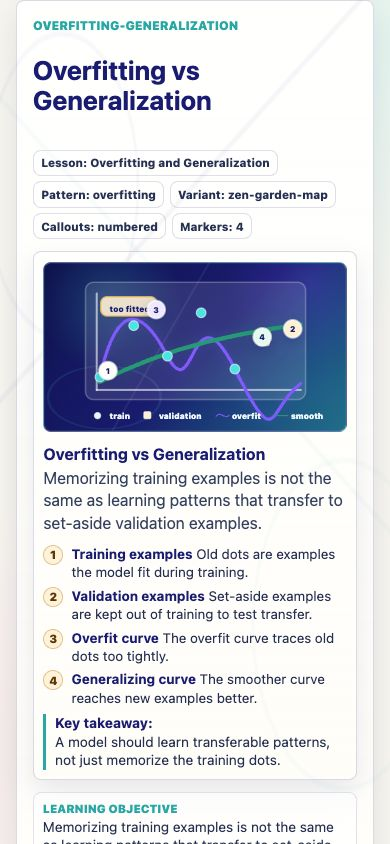
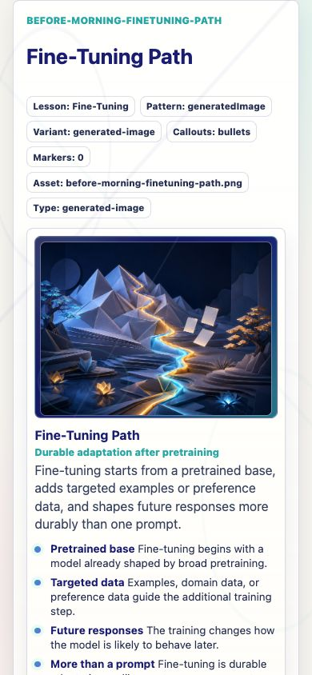
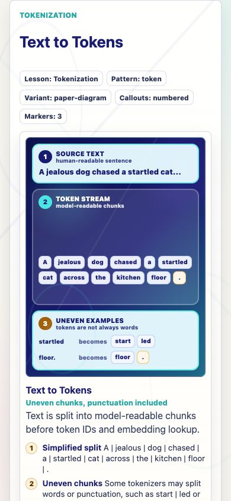
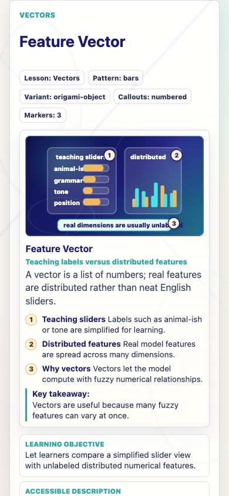
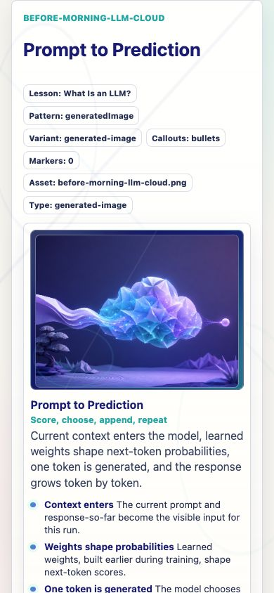
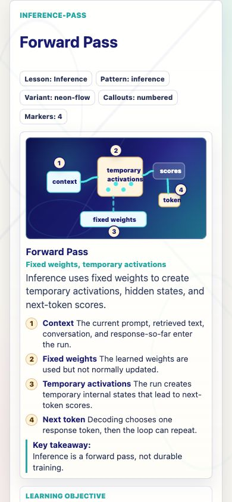
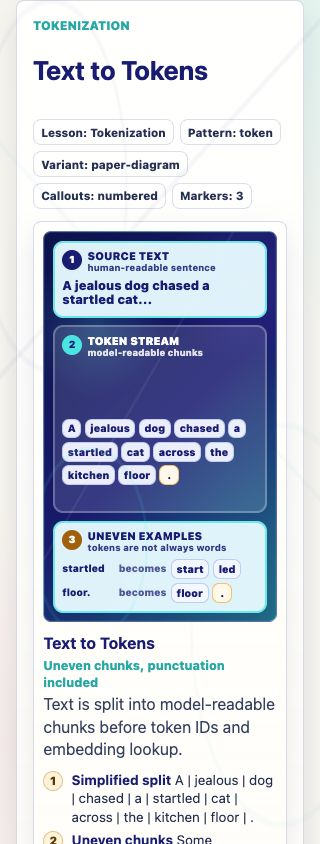
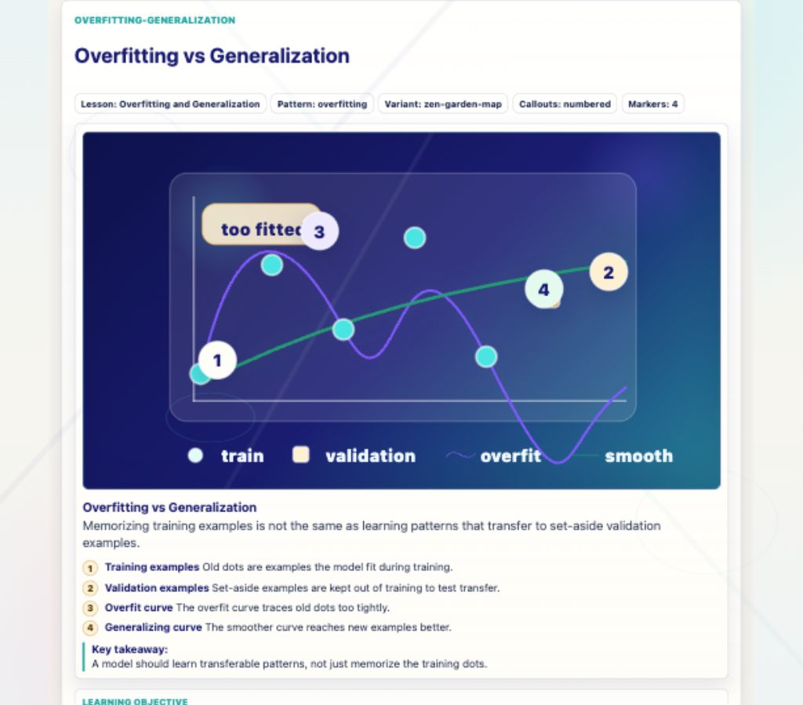

Prompt Life · v0.27.16
Journey Visual Aid Consistency Report
This pass adds a reusable visual aid grammar and audits all 39 Journey visual aids for numbered marker/list consistency, mobile-safe callouts, and generated PNG boundaries.
Grammar Summary
Numbered callouts are now reserved for visuals with matching diagram markers. Generated PNG-backed and atmospheric/metaphorical visuals use unnumbered HTML callouts. Exact mechanism diagrams remain coded SVG/HTML.
Top 10 Fixed Items
- Added shared visual aid frame, diagram shell, caption, and callout-list grammar.
- Added numbered-vs-bulleted callout rendering.
- Changed generated PNG-backed scenes to unnumbered HTML callouts.
- Added four chart markers to Overfitting vs Generalization.
- Rewrote Overfitting callouts to remove stray Point 2 wording.
- Added 1/2/3 badges to the Tokenization HTML diagram.
- Added the fourth Token IDs marker for the lookup-key boundary.
- Added the fourth Autoregression marker for run-again.
- Added four Context Window markers for visible/limited/temporary/next-token use.
- Added complete marker sets for Grounding and Hallucination evidence visuals.
Remaining Backlog
- Collective Intelligence, Benefits, Costs, and Human-Centered AI remain good atmospheric Image 2 candidates.
- Fine-Tuning Path can later receive coded overlay markers if learners need more explicit contrast with prompting/RAG.
- Attention, MLP, Layers, Hidden States, Logits, Softmax, and Sampling are readable but should remain candidates for future precision polish.
- No new PNGs were generated in this pass.
Image 2 Prompt Summary
The prompt sheet recommends future atmospheric PNGs for Collective Intelligence, Benefits, Costs, and Human-Centered AI. It explicitly keeps exact mechanism visuals such as tokenization, vectors, tensors, RAG, grounding, logits, softmax, sampling, and context windows as coded SVG/HTML.
39-Card Visual Aid Table
| ID | Title | Type | Callouts | Markers | Items | Status | Note |
|---|---|---|---|---|---|---|---|
| before-morning-llm-cloud | Prompt to Prediction | generated-image | bullets | 0 | 4 | ok | Textless PNG with HTML callouts. |
| ai-family-tree | AI Family Tree | coded-svg | bullets | 0 | 5 | ok | Taxonomy labels are short; definitions stay below. |
| traditions | Rules and Learned Patterns | coded-svg | bullets | 0 | 3 | ok | Concept comparison, not step markers. |
| training-loop | Training Loop | coded-svg | numbered | 5 | 5 | ok | Five loop nodes have matching seals. |
| before-morning-pretraining-landscape | Broad Pretraining | generated-image | bullets | 0 | 4 | ok | Textless PNG with HTML callouts. |
| overfitting-generalization | Overfitting vs Generalization | coded-svg | numbered | 4 | 4 | ok | Training dots, validation dots, overfit curve, and smooth curve now match markers. |
| before-morning-finetuning-path | Fine-Tuning Path | generated-image | bullets | 0 | 4 | ok | HTML callouts preserve durable adaptation versus prompt/RAG boundaries. |
| before-morning-alignment-garden | Alignment Landscape | generated-image | bullets | 0 | 4 | ok | Textless PNG with behavior-shaping callouts. |
| inference-pass | Forward Pass | coded-svg | numbered | 4 | 4 | ok | Context, fixed weights, temporary activations, next token. |
| prompt-response | Prompt vs Response | coded-html | numbered | 4 | 4 | ok | Four stacked panels have matching badges. |
| tokenization | Text to Tokens | coded-html | numbered | 3 | 3 | ok | Source, token stream, uneven examples have matching badges. |
| token-ids | Token IDs | coded-svg | numbered | 4 | 4 | ok | Token, ID, embedding row, and limit markers match. |
| embeddings | Embedding Lookup | coded-svg | numbered | 4 | 4 | ok | Durable table through hidden-later boundary. |
| vectors | Feature Vector | coded-svg | numbered | 3 | 3 | ok | Teaching sliders, distributed features, vector usefulness. |
| tensors | Tensor Block | coded-svg | numbered | 3 | 3 | ok | Token axis, feature axis, batch note. |
| attention | Attention Weave | coded-svg | bullets | 0 | 4 | ok | Relationship diagram without numbered markers. |
| mlp | MLP Feature Workshop | coded-svg | bullets | 0 | 4 | ok | Feature reshaping is described in bullets. |
| layers | Transformer Stack | coded-svg | bullets | 0 | 4 | ok | Repeated layer structure is not a marker sequence. |
| hidden-states | Hidden State Flow | coded-svg | bullets | 0 | 4 | ok | Flow labels stay short; definitions stay below. |
| logits | Raw Scoreboard | coded-svg | bullets | 0 | 4 | ok | Raw-score bars are conceptual, not numbered steps. |
| softmax | Score to Probability | coded-svg | bullets | 0 | 4 | ok | Function contrast remains unnumbered. |
| sampling | Weighted Token Choice | coded-svg | bullets | 0 | 4 | ok | Probability bubble scene remains unnumbered. |
| autoregression | Append and Repeat | coded-svg | numbered | 4 | 4 | ok | Response-so-far, token choice, append, run-again markers match. |
| context-window | Temporary Context Window | coded-svg | numbered | 4 | 4 | ok | Visible context, capacity, temporary boundary, next-token use markers match. |
| rag-retrieval | Open-Book Retrieval | coded-svg | numbered | 5 | 5 | ok | Prompt, retriever, notes, response, fixed weights. |
| grounding-evidence | Claim Support Map | coded-svg | numbered | 4 | 4 | ok | Claim, evidence, support check, and review markers match. |
| hallucination-bridge | Unsupported Bridge | coded-svg | numbered | 4 | 4 | ok | Fluent surface, supported claim, missing support, review markers match. |
| ai-learns | Learning Modes Matrix | coded-svg | bullets | 0 | 4 | ok | Matrix distinctions are unnumbered. |
| diffusion | Append Or Denoise | coded-svg | bullets | 0 | 3 | ok | Two-lane mechanism contrast remains unnumbered. |
| multimodal | Media Lane Map | coded-svg | bullets | 0 | 4 | ok | Input/representation/output scene remains unnumbered. |
| perfect-storm | Storm Front | coded-svg | bullets | 0 | 4 | ok | Convergence ingredients stay as short labels. |
| collective-intelligence-lantern | Borrowed Flames | coded-svg | bullets | 0 | 3 | ok | Atmospheric candidate, currently coded. |
| benefits-tool-garden | Benefit Tiers | coded-svg | bullets | 0 | 3 | ok | Tier labels stay in diagram; detail stays below. |
| costs-invisible-factory | Cost Ledger | coded-svg | bullets | 0 | 3 | ok | Cost categories stay unnumbered. |
| human-centered-ai-garden | Accountability Flow | coded-svg | bullets | 0 | 3 | ok | Accountability flow stays unnumbered. |
| responsible-ai-forked-path | Better-AI Control Panel | coded-svg | bullets | 0 | 3 | ok | Lever panel stays unnumbered. |
| prompting-context-tray | Context Tray | coded-svg | bullets | 0 | 3 | ok | Prompt-parts scene stays unnumbered. |
| synthesis-map-compass-lantern | Full Chain Map | coded-svg | bullets | 0 | 3 | ok | Final synthesis map stays coded. |
| risk | Risk Ledger | coded-svg | bullets | 0 | 3 | ok | Risk/myth ledger stays unnumbered. |
Screenshot QA







